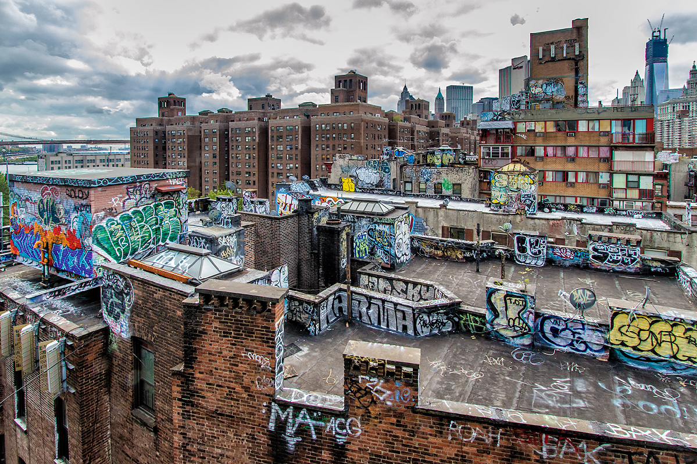
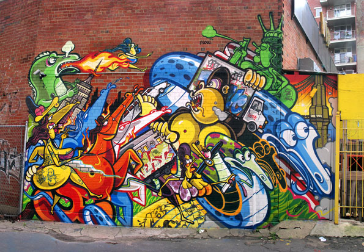
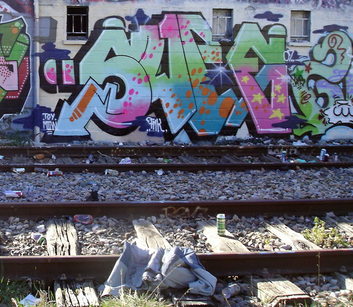

-
Home
-
About
-
Manhattan
-
The Bronx
-
Staten island
-
Queens
-
Brooknlyn
...
Graffiti in Manhattan
On January 1, 2006, in New York City, legislation created by Councilmember Peter Vallone, Jr. attempted to raise the minimum age for possession of spray paint or permanent markers from 18 to 21. The law prompted outrage by fashion and media mogul Marc Ecko who sued Mayor Michael Bloomberg and Councilmember Vallone on behalf of art students and "legitimate" graffiti artists. On May 1, 2006, Judge George B. Daniels granted the plaintiffs' request for a preliminary injunction against the recent amendments to the anti-graffiti legislation, effectively prohibiting the New York Police Department from enforcing the higher minimum age.[17] A similar measure was proposed in New Castle County, Delaware in April 2006[18] and passed into law as a county ordinance in May 2006.[At the same time, graffiti has begun to enter mainstream.[1] Much controversy arose on whether graffiti should be considered an actual form of art.[1][3][20][21] Since the 1980s, museums and art galleries started treating graffiti seriously.[1] Many graffiti artists had taken to displaying their works in galleries and owning their own studios. This practice started in the early 1980s with artists such as Jean-Michel Basquiat, who started out tagging locations with his signature SAMO (Same Old Shit), and Keith Haring, who was also able to take his art into studio spaces. In some cases, graffiti artists had achieved such elaborate graffiti (especially those done in memory of a deceased person) on storefront gates that shopkeepers have hesitated to cover them up. In the Bronx after the death of rapper Big Pun, several murals dedicated to his life done by BG183, Bio, Nicer TATS CRU appeared virtually overnight;[22] similar outpourings occurred after the deaths of The Notorious B.I.G., Tupac Shakur, Big L, and Jam Master Jay.[23][24]
how we can fix it
There is no apparent problem about graffiti in Manhattan besides the fact that is illegal but other than mannhatan is the best borough that

a mural of abstract graffitit

an overhead view of graffiti on some rooftops

a picture of graffiti on a wall near an apartment building

A picture of Graffitit on a wall near rail road tracks